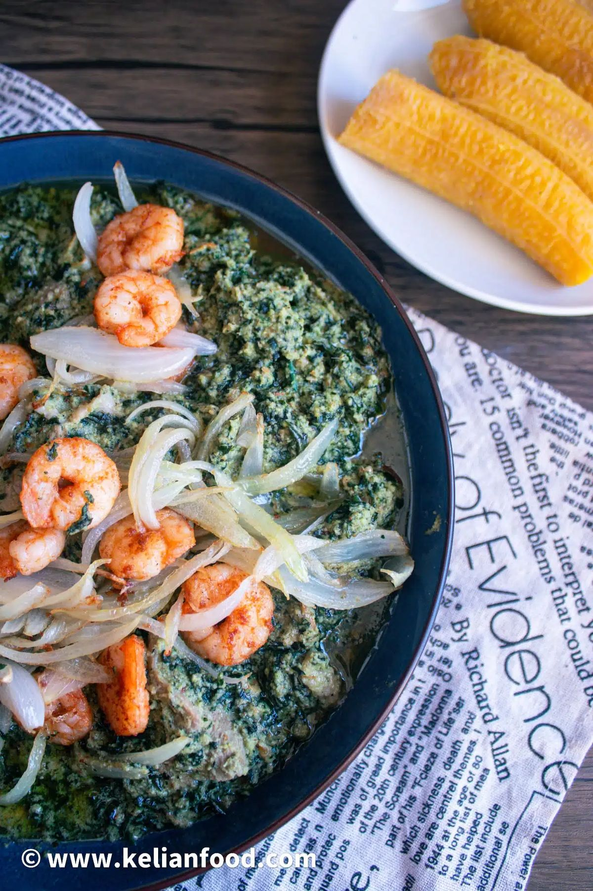

Home
Ndolé

Desrciption
Ndolé is often called Cameroon’s national dish. It comes from the Littoral region, among the Sawa people, and is made from tender bitter leaves (Vernonia) simmered with ground peanuts, crayfish, beef and shrimp. The sauce is creamy, nutty and pleasantly bitter. It is served with sweet fried ripe plantains, whose caramelized sweetness contrasts beautifully with the depth of the stew. Ndolé is a classic of weddings, holidays and special meals.
Serves 4 to 6 · Prep: 40 min · Cooking: 1 hour 15 min
Ingredients
The stew:
- 500 g ndolé leaves (fresh, frozen or dried)
- 250 g raw peanuts, peeled (or 6 tbsp natural peanut butter)
- 500 g beef, cut into chunks
- 2 large onions
- 300 g shrimp or prawns, peeled
- 4 garlic cloves, 1 piece of ginger
- 3 tbsp ground crayfish
- 1 stock cube, salt, chili pepper to taste
- 5 tbsp vegetable oil
The side:
- 4 very ripe plantains (yellow with black spots)
- Oil for frying
Steps
- Prepare the leaves: rinse them thoroughly. Boil for 15 to 20 minutes, then drain and squeeze out the water. Repeat once if the leaves are very bitter. Chop finely if needed.
- Cook the beef: simmer it with half the onion, garlic, ginger, the stock cube and salt for 30 to 40 minutes until tender. Keep the broth.
- Make the peanut paste: boil the peanuts for 10 minutes, drain, then blend with a little water until smooth and creamy.
- Build the sauce: heat 3 tablespoons of oil in a large pot. Fry the remaining onion until soft, add the peanut paste and a ladle of beef broth, and cook for 10 minutes, stirring often.
- Combine: add the leaves, beef, crayfish and chili. Simmer for 15 to 20 minutes on low heat.
- Cook the shrimp: fry the shrimp quickly in 2 tablespoons of oil with a little garlic, then stir them into the stew for the last 5 minutes.
- Fry the plantains: peel and slice them diagonally. Fry in hot oil for 2 to 3 minutes per side until golden and caramelized. Drain on paper.
- Serve: ladle the ndolé onto plates and place the fried plantains alongside.